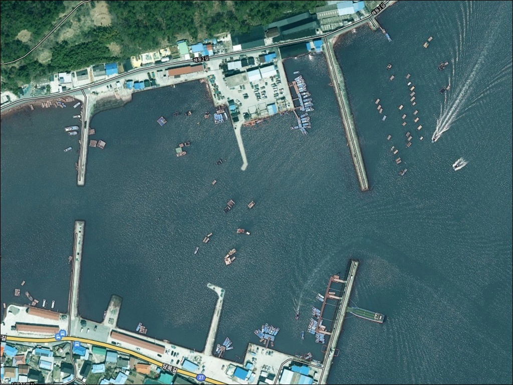
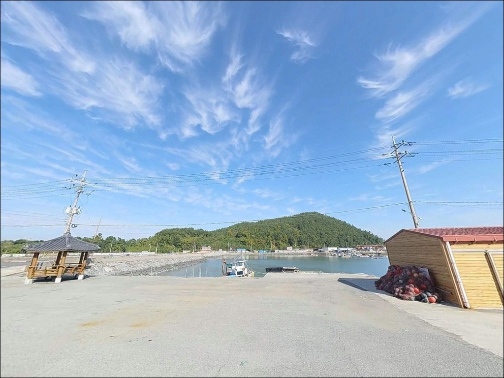
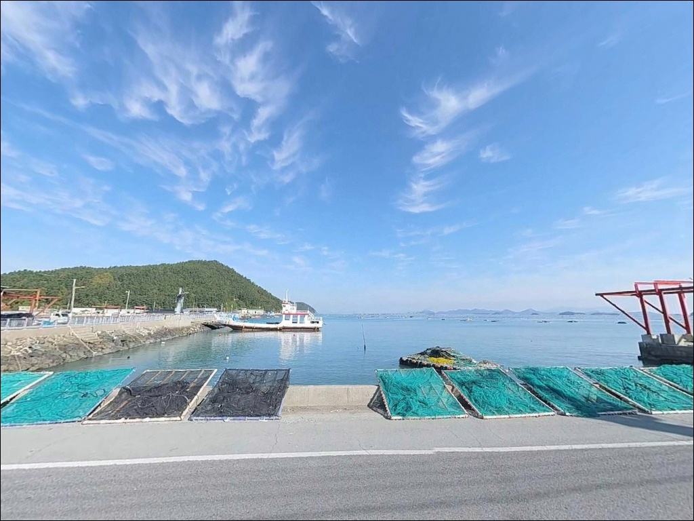
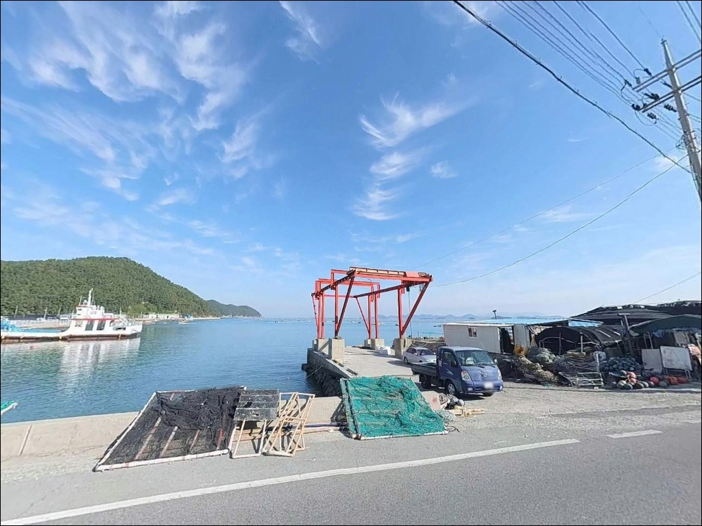
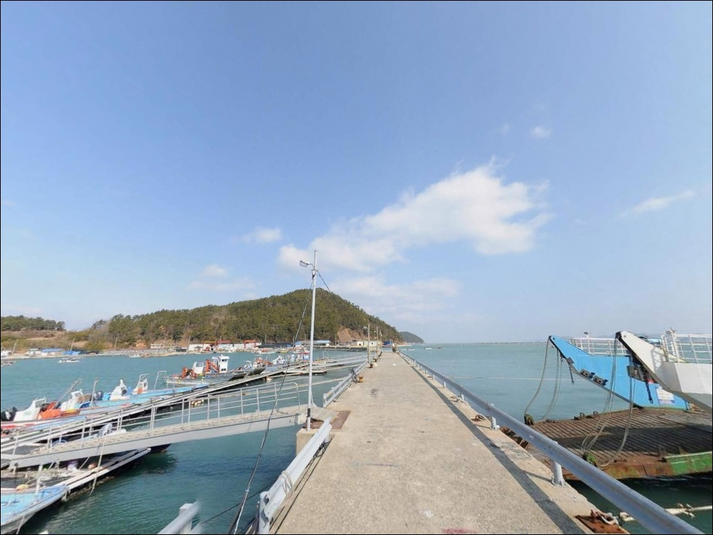
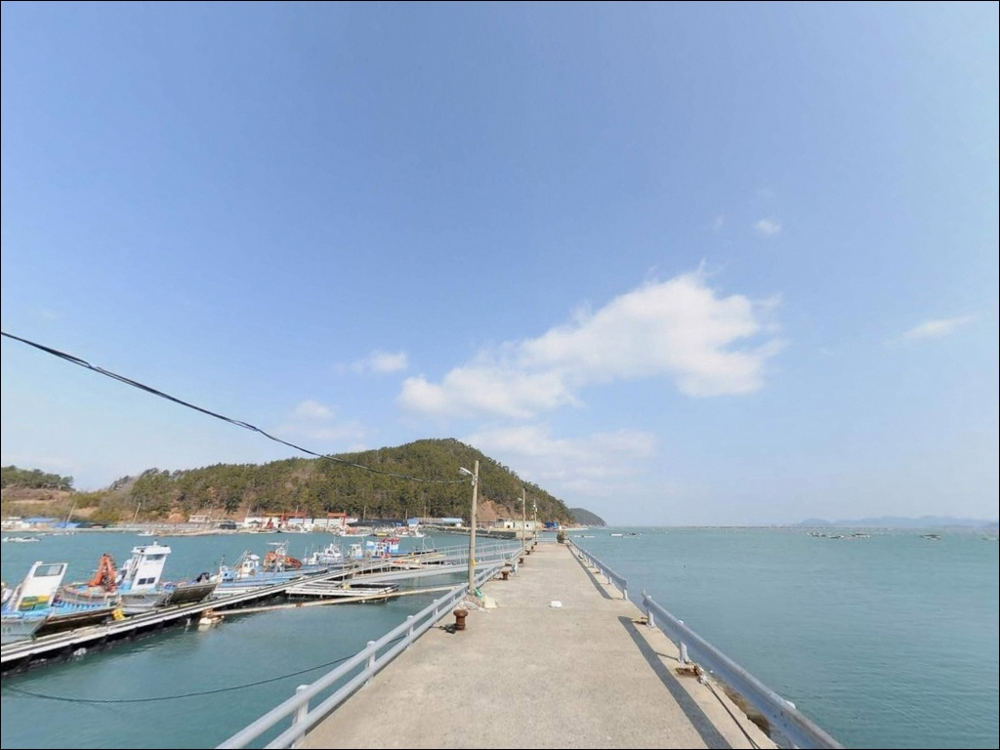
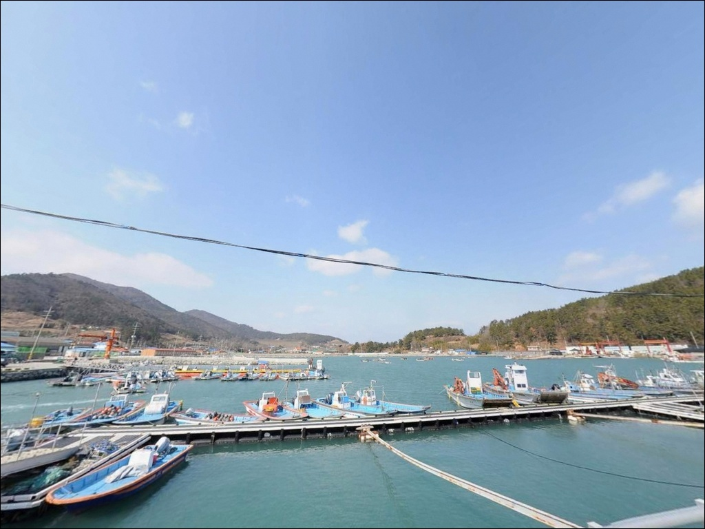
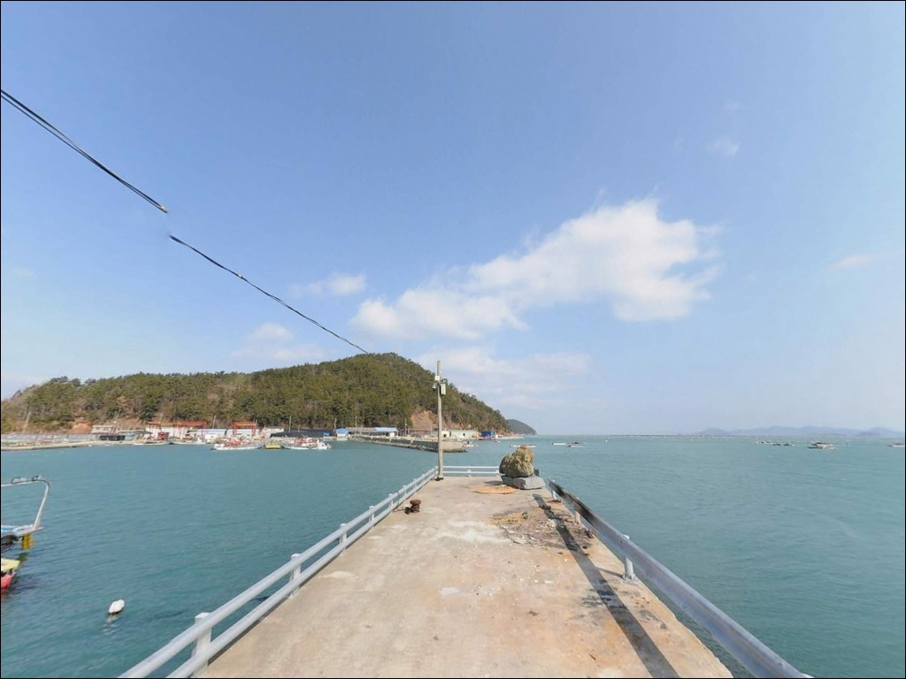
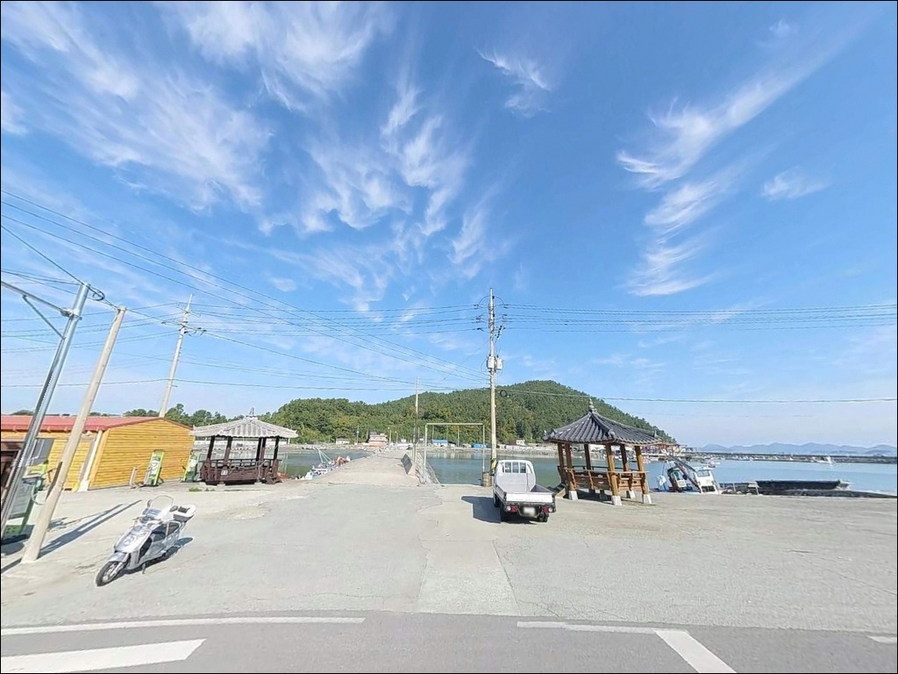

해동항, 해동선착장, 해동방파제, 해동방파제, 조약도 전남 완도군 나만 알고 싶은 숨은 노지 바다 차박 낚시 포인트


포인트 안내
해동항(해동선착장, 해동방파제)
전남 완도군 약산면 해동리 288-28
내만형 포구처럼 보여도
해동항 외항 끝단은 약산도와 금일도 사이 수로 조류가
그대로 집중되는 구간입니다.
사리 전후에 아무 채비나 던지면
조류에 밀려 채비 컨트롤 자체가 어려워지는
구조입니다.
방파제 91m, 선착장 130m, 물양장 44m를 갖춘
지방어항으로,
외항에는 테트라포트가 설치되어 있고
내항은 콘크리트 직벽 구조입니다.
발판 조건과 수심 모두 낚시에 적합한 형태이지만,
조류 세기에 따라 포인트 자리 선택이 달라집니다.
이 글은 해동항의 진입 여건, 차박 체류 조건,
낚시 스타일별 공략 방향에 집중합니다.
조황 단정이나 특정 어종 보장은
이 글의 범위에 포함되지 않습니다.

1. 진입 동선과 포인트 접근성
조약도(약산도)는 고금대교와 약산대교를 통해
육지와 연결됩니다.
해동리는 섬 동쪽에 위치하므로
약산대교를 건넌 뒤 섬 내부 도로를 따라
동쪽 해안 방향으로 이동합니다.
해동길을 따라 항구 끝까지
아스팔트 포장 구간이 이어지며,
대형 캠핑카도 진입이 가능한 폭을
확보하고 있습니다.
방파제 입구와 선착장 내 광장이 넓어
대형 차량도 회차에 문제가 없습니다.
주차는 방파제 시작점 좌측 콘크리트 공터가
가장 넓고 사용하기 편합니다.
차 바로 옆에서 낚시까지 가능한 자리는
내항 선착장 직벽 인근 구간입니다.
다만 어선 하역 동선을 막지 않는 위치를
먼저 확인하고 주차하는 것이 기본입니다.

2. 차박 환경과 야간 체류 여건
방파제 입구 좌측 콘크리트 공터는
차박 주차 공간으로 활용하기에 가장 여유 있는 자리입니다.
민가와 약 200m 이상 이격되어 있어
야간 정숙성이 유지되는 편입니다.
항만 가로등이 설치되어 있어
완전 암흑 환경은 아니고,
야간 낚시 이후 차 안에서 머무는 데
큰 불편은 없는 수준입니다.
해동항은 동쪽 득량만 방향으로 열려 있는 구조라
북동풍이나 동풍이 강할 때는
외항 쪽으로 파고가 올라옵니다.
차박 당일 기상 예보에서
동풍 3~4m 이상이 예고된 경우라면
주차 자리를 방파제 안쪽으로 잡는 것이
안전합니다.
선착장 내 공중화장실이 상시 개방되어 있어
차박 체류 중 화장실 접근에 문제가 없습니다.
편의시설 없이 머무는 형태가 아니라
기본 인프라를 갖춘 포인트입니다.


3. 주변 편의시설 및 인프라 현황
해동항에서 차량으로 5분 거리인
약산면 소재지에는
하나로마트, CU, GS25 편의점,
주유소, 보건지소가 갖춰져 있습니다.
출조 전 식량과 낚시 소품을
모두 갖추지 않고 출발해도
소재지에서 추가 조달이 가능한 구조입니다.
항구에서 당장 걸어갈 수 있는 편의점은 없습니다.
야간 낚시 중 급하게 필요한 소품이 있다면
출발 전에 미리 챙겨야 합니다.
응급 상황 시 약산보건지소는 반경 3km 안에 있고,
고금면 약국은 반경 7km 권역에 있습니다.

4. 방문 전 반드시 챙겨야 할 준비사항
해동항 방문에서 가장 먼저 확인할 것은
물때입니다.
약산도와 금일도 사이 수로 지형 특성상
사리 전후 조류는 채비를 바닥까지
끌어내릴 만큼 세집니다.
바다타임에서 해동항 기준 물때를 확인하고
조금 전후 또는 정조 전후 타이밍을 먼저 계산한 뒤
출발 시각을 정하는 것이 기본 전략입니다.
외항 테트라포트 구간은 해조류로 인해
미끄러움이 심한 편입니다.
갯바위화는 선택이 아니라 필수입니다.
구명조끼도 테트라포트 구간 진입 시
반드시 착용해야 합니다.
해수면 상승 시 내항 저지대 침수 가능성도 있어
물때 정보를 당일 한 번 더 확인하는 편이 좋습니다.
어선 계류 구간과 어구 적재함 인근에는
주차를 피하는 것이 기본 매너입니다.
발생한 쓰레기는 약산면 소재지
종량제 봉투 수거함에 배출합니다.

5. 수로 조류를 품은 지형 — 낚시 여건 분석
해동항의 핵심은 방파제 외항 끝단입니다.
수심이 8~12m 수준으로 깊어지는 이 구간은
약산도와 금일도 사이 수로 조류가
방파제 콧부리를 타고 집중되는 형태입니다.
조류 흐름이 살아 있는 조건에서
찌낚시와 에깅 채비 모두 힘을 발휘하는 구조입니다.
외항 전체에 테트라포트가 설치되어 있어
발판은 주의가 필요하지만
조류 통과 구간 접근이 가능합니다.
내항은 콘크리트 직벽 구조로
수심이 완만하게 떨어지는 편이며,
어선 계류 구간 옆에서
석축 경계면을 노리는 에깅 운용이 가능합니다.
해역 전체가 양식 활동이 활발한 수역이라
바다 자체가 영양 환경을 갖춘 편입니다.
방파제 끝단 외항부가 가장 핵심 포인트이며,
항 입구 수로 라인도 조류 흐름이 살아 있는
탐색 가치가 있는 구간입니다.
출조 전에 해동항 인근 최신 조황은
꼭 검색해 보시기 바랍니다.


6. 해동항에 어울리는 낚시 스타일
찌낚시가 이 포인트 지형과 가장 잘 맞습니다.
외항 테트라포트 구간에서
감성돔과 뱅에돔을 노리는 릴찌낚시 방식이
수로 조류 흐름을 가장 효과적으로 활용합니다.
조금 전후 조류가 완만해지는 타이밍에 자리를 잡고
테트라포트 경계를 따라 흘리는 것이
기본 운용입니다.
갑오징어 에깅도 이 포인트 구조에 잘 맞습니다.
방파제 끝단 콧부리와 내항 석축 경계면이
에깅 채비를 운용하기에 적합한 구간입니다.
약산도 일대 해역은 갑오징어 포인트로
낚시인들 사이에서 알려진 수역이며,
수온이 오르는 봄부터 가을까지 시즌이 길게 형성됩니다.
주꾸미도 내항 석축 주변에서 기대해 볼 수 있습니다.
원투낚시는 외항 방향으로 캐스팅할 때
붕장어, 도다리, 보리멸을 기대할 수 있습니다.
바닥이 모래와 자갈이 섞인 지형으로
채비 유실에 주의하면서
중거리 공략 위주로 운용하는 것이 효율적입니다.
볼락 라이트게임은 야간에 가로등 불빛 주변과
내항 석축 경계를 소형 지그헤드로
천천히 탐색하는 방식으로 운용합니다.

7. 대안 포인트와 플랜 B 동선
해동항 외항에 바람이 강하거나
주차 여건이 여의치 않은 경우,
동일 해동리 내에 있는
당목항이 첫 번째 대안입니다.
국가어항으로 방파제 규모가 크고
발판이 안전하며, 페리 운항이 없는
시간대를 골라 진입하면 됩니다.
차량으로 15분 거리에 득암항이 있습니다.
약산면 대표 어항 중 하나로
방파제 수심이 깊고 발판이 안정적입니다.
이 일대 해역 낚시 정보가 상대적으로 풍부해
조황 흐름을 파악하는 데
참고 포인트로 함께 계획에 넣어두는 것이 좋습니다.
차박 대안을 찾는다면
차량으로 10분 거리의 가사해수욕장 주차장이
공원화된 공간으로 화장실과 개수대가 갖춰져 있습니다.
해동항이 여의치 않을 때 하룻밤 머무는 후보지로
미리 동선을 파악해두면 현장 판단이 빠릅니다.

조류 타이밍 맞추면
해동항이 달라 보입니다
감성돔 찌낚시나 갑오징어 에깅을 즐기는 낚시인이라면
해동항의 수로 조류 구조와 8~12m 수심은
기대해볼 만한 지형 조건입니다.
대형 차량도 문제없는 진입로,
화장실이 갖춰진 주차 공간,
5분 거리의 약산면 소재지 인프라까지
낚시와 차박을 동시에 구성하기에 조건이 무난한 포인트입니다.
반면 아무 물때나 외항에 자리를 잡으면
수로 조류에 채비 컨트롤이 불가능해지는 상황을
맞닥뜨릴 수 있습니다.
사리 전후에는 외항 찌낚시 운용이
현실적으로 어려운 구간이 생깁니다.
물때 확인, 동풍 기상 체크, 진입 전 주차 동선 파악,
이 세 가지를 갖추고 간다면
약산도에서 손에 꼽히는 출조지가 될 수 있는 곳입니다.
당목항을 플랜 B로 묶어두고
해동항을 기점으로 삼아 조류 타이밍을 맞춰 낚시하고,
조용한 공터에서 하룻밤 머무는 차박을 더한다면
약산도 동쪽 해안이 온전히 자신의 포인트가 됩니다.